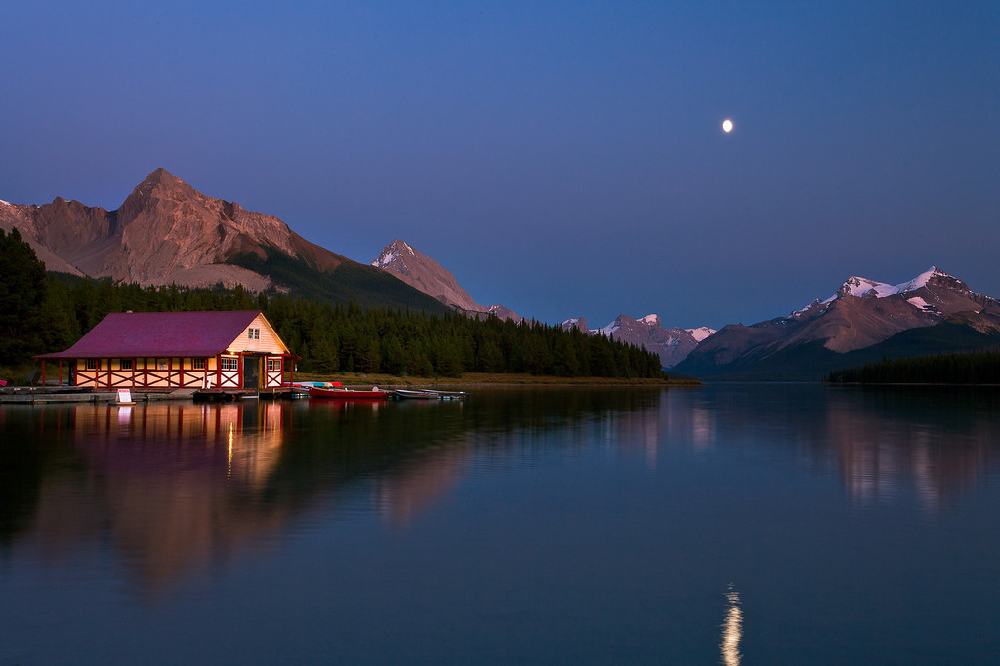
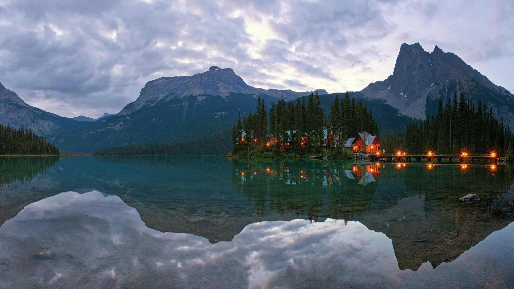

Кана́да — государство в Северной Америке, крупнейшее по площади на этом континенте и второе в мире. По численности населения 37-е государство в мире (40 170 072 чел на 22 июля 2023 года[2]). Плотность населения (4,2 чел. на 1 км²) является одной из самых низких в мире. Омывается Атлантическим, Тихим и Северным Ледовитым океанами, имея самую длинную береговую линию в мире (более 202 тыс. км). Граничит с Соединёнными Штатами Америки на юге и на северо-западе (Аляска) и с Данией (остров Ханс) на северо-востоке, имеет морскую границу с Францией (Сен-Пьер и Микелон) на востоке. Граница Канады и США является самой протяжённой общей границей в мире. Канада сформировалась в XVII—XIX веках как комплекс французских и британских колоний в Северной Америке и получила независимость в результате мирного процесса, длившегося с 1867 по 1982 год. В настоящее время Канада — федеративная конституционная монархия с парламентской системой правления, входящая в состав Содружества наций; её формальным главой является монарх Великобритании (как король Канады). В состав федерации входят 10 провинций и 3 территории. Федеральная столица — город Оттава.
О стране
Природа


Культура
Культурное наследие Канады богато и разнообразно. Это страна, где сочетаются европейская, индейская и азиатская культуры, что создает уникальное общество, особенный стиль жизни и неповторимую атмосферу. Канада богата на исторические памятники, музеи, галереи, театры, фестивали и другие культурные достопримечательности, которые являются значительной частью национального наследия страны.